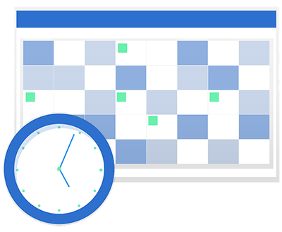

Tramites y Reclamos
Si tenes algun problema o necesitas realizar algun tramite con nosotros, te dejamos todo lo que necesitas saber.
Altas
Si sos afiliado de nuestra obra social y queres acceder a la cobertura, tenes que presentar la siguiente documentación.
- Copia de DNI
- Recibo de sueldo
- Constancia de CUIL
- CODEM
Inclusión de integrante
Para anotar a un integrante de tu grupo familiar tenes que presentar:
- Fotocopia de DNI del integrante
- Partida de nacimiento para un menor
- Certificado de matrimonio o convivencia
- Constancia de CUIL
- Certificación negativa de ANSES
Reingreso/Cambio de empleador
Si cambiaste de trabajo y continuas con nosotros, acercanos la siguiente documentación:
- Copia de recibo de sueldo o alta temprana de AFIP
- Documentación de cada integrante del grupo familiar
Traspaso
Si tenes otra obra social y queres adherirte a la nuestra, ingresa al siguiente enlace para saber más:

Tipos de bajas
Cese de relacion laboral
Presentar telegrama de despido o renuncia o baja de AFIP para comenzar a gozar del distrato laboral
Baja de un integrante

Presentar constancia de cobertura en otra obra social, divorcio o constancia de finalizacion de concubinato
Cambio de obra social
Si realizaste un cambio de obra social, presentar constancia de la misma.
Preguntas frecuentes
¿Como realizo el tramite?
Todos los tramites se pueden realizar en forma presencial en nuestras oficinas o via email.
Cuanto tiempo demora el tramite
Los tramites tienen una demora de 72 horas habiles, en las que se recibe la documentacion y se envia a la prestadora para su ingreso.
Puedo incluir en mi grupo familiar a mis padres o hermanos
Los integrantes que podes incluir son tus padres e hijos. Unicamente podes anotar a tus padres si son mayores de 60 años, son discapacitados o incapacitados para trabajar y no cuentan con cobertura medica
Paso el plazo y todavia no veo procesado mi tramite
Una vez cumplidas las 72 horas habiles si el tramite no fue procesado, comunicate a nuestros telefonos de contacto o mail para realizar el reclamo.